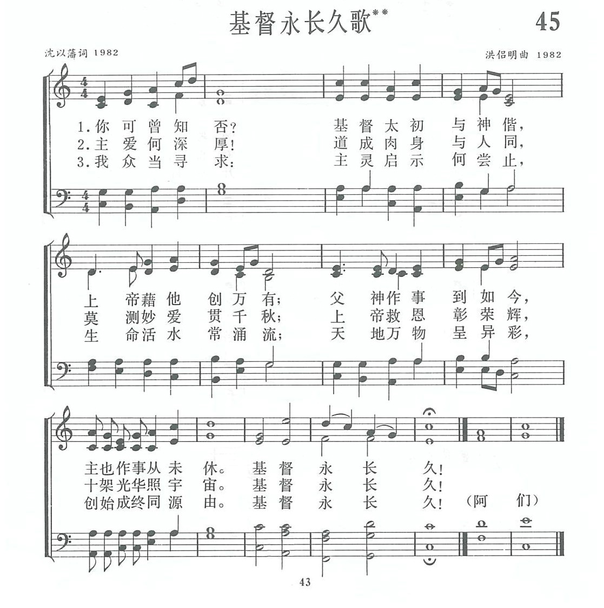

|
|
|
|
|
第045首《基督永长久歌》 1.你可曾知否？ 基督太初与神偕，上帝藉他创万有； 父神作事到如今，主也作事从未休。 基督永长久！ 2.主爱何深厚！ 道成肉身与人同，莫测妙爱贯千秋； 上帝救恩彰荣辉，十架光华照宇宙。 基督永长久！ 3.我众当寻求： 主灵启示何尝止，生命活水常涌流； 天地万物呈异彩，创始成终同源由。 基督永长久！(阿门）
|
|
https://www.zanmeishige.com/tab/13676.html?songbook=1&index=45
 |
|
|
|
|

https://youtu.be/zRK5LnCda14
第45首 基督永长久歌** _沈以藩 CHRIST EVER ETERNAL
经文：“我是阿拉法，我是俄梅戛；我是首先的，我是末后的；我最初，我是终“(启22：13)。
这首诗写成于1982年，是上海沈以藩主教与洪侣明同工夫妇合作的成果。
沈以藩生于1928年，他的父亲沈子高主教(事略参阅第67首)是我国教会中研究崇拜学的前辈，也曾担任《普天颂赞》编委。沈以藩自幼奉献，立志传道，1948年毕业于金陵大学文学院，1951年毕业于中央神学院研究科，以后在上海诸圣堂、新恩堂、国际礼拜堂担任基层教会的牧师。他曾经担任中华圣公会总议会常务委员会办事处干事之职，198O年后任中国基督教协会常委、副会长兼总干事，1988年祝圣为主教。
1982年我国基督教圣诗委员会成立时，他被邀担任委员。同工们竭力鼓励他带头写赞美诗，起初他以从未写过诗歌为由，十分推辞。有位同工对他说：“你父亲沈子高老主教为编写中国赞美诗作了贡献，你义不容辞，有责任继承他的事业，圣灵藉着同工们的提醒催促着他，使他终于下决心动笔写下了《基督永长久》这首诗。
中国信徒经历过十年动乱，在教堂被迫关闭的年代里，似乎上帝掩面不顾他的子民。1982年却是另一番景象：受到不公正待遇的人们被平反，人民重新享有宗教信仰的自由，崇拜的人群挤满了每个已经开放的礼拜堂，这些都激起了作者在基督论方面的反复思想。他说：“写《基督永长久歌》是深感三十多年来上帝对新中国基督徒在灵性上的带领，使我们逐渐突破了那种认为基督只是我们个人的救主，以及他仅在教会中得荣耀的狭隘的基督观，而使我们更深地进入圣经的启示，体认到基督是我们创始成终的主。”
歌词以“你可曾知否?”这个问句开始，启发人追求认识基督；接下去是叙述基督参与创造、道成肉身、成全救赎’着重点出主说的“我父作事直到如今，我也作事”(约5：17)，于是，一位充满宇宙、掌管历史的基督展示在我们面前。全诗归结于“基督永长久”这个主题，也是进展中的高潮。
洪侣明于193O年出生于上海一位教授兼牧师的家庭，幼年开始学习钢琴，从少年时期便担任礼拜堂琴师和参加唱诗班等教会音乐方面的事工。她毕业于圣约翰大学教育系，在教会机构内担任过秘书、编辑，1980年后任上海女青年会事工干事、副总干事。1980年全国基督教两会组织“圣诗工作小组”时她便参加工作，是《新编》编辑部成员之一。
关于她为《基督永长久》这首诗谱曲之经过，她回忆说：“记得那是1982年暮春时节，圣诗编辑小组决定摆脱各自肩上其他任务，暂时‘隐居’到南京金陵协和神学院去为《新编》集中工作一段时期。临离沪前，编辑小组要我向沈以藩催索诗稿。那天晚上，当我拿到诗稿后，读时心里很受感动，愿意立即为它谱上曲调。我觉得这诗总的基调应是庄严稳重。
第一句用的是启发式的提问，因此乐曲也应该是像提问似的向上语调。当初我用的是此处图片省略 后改为356此处图片省略 。这样既能更好地体现稳重性，又可避免过早地出现全曲点题时用的最高音。每节最后一句诗句‘基督永长久’，是全诗的中心，应该用最高亢的音调来表达。我就从前面两句开始，使情绪随着乐曲逐渐上升，并且最后又用减慢一半的速度来着重渲染“基一督一永一长一久！”上帝的感动真是奇妙，过去从来没有作曲经验的我，这次却在耳边不断听到此处图片省略 的乐曲声。迫使我立即随手记下，当晚很快就完成了曲调的初稿。”
这首诗虽然不长，但歌词曲调配合较好，尤以结尾气势磅礴，特别适用于庄严的崇拜场合。1984年英国国家广播公司在上海摄制《赞美歌声》电视片，便以这首诗作为整个圣乐崇拜的结束。次年，英国出版了一本新的赞美诗集《天赐诗歌》，也选用了这首诗，并译成英文。
《新编》第208首也是沈以藩夫妇的作品。